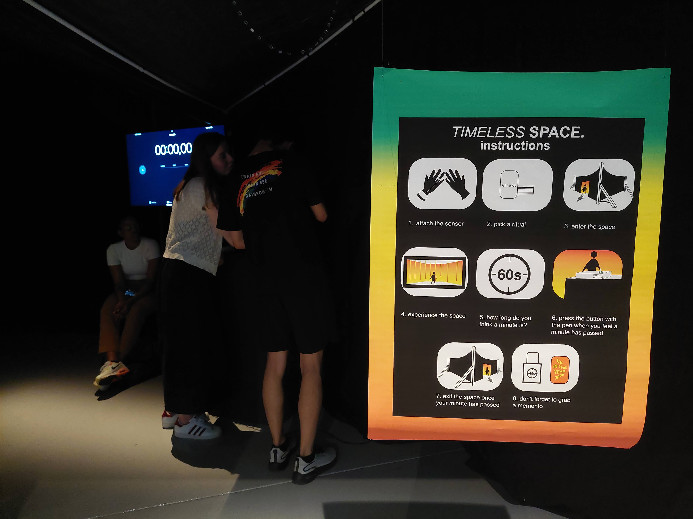
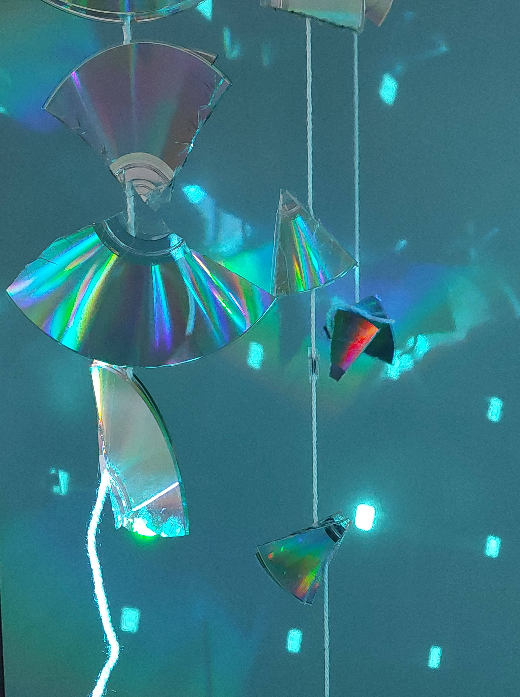
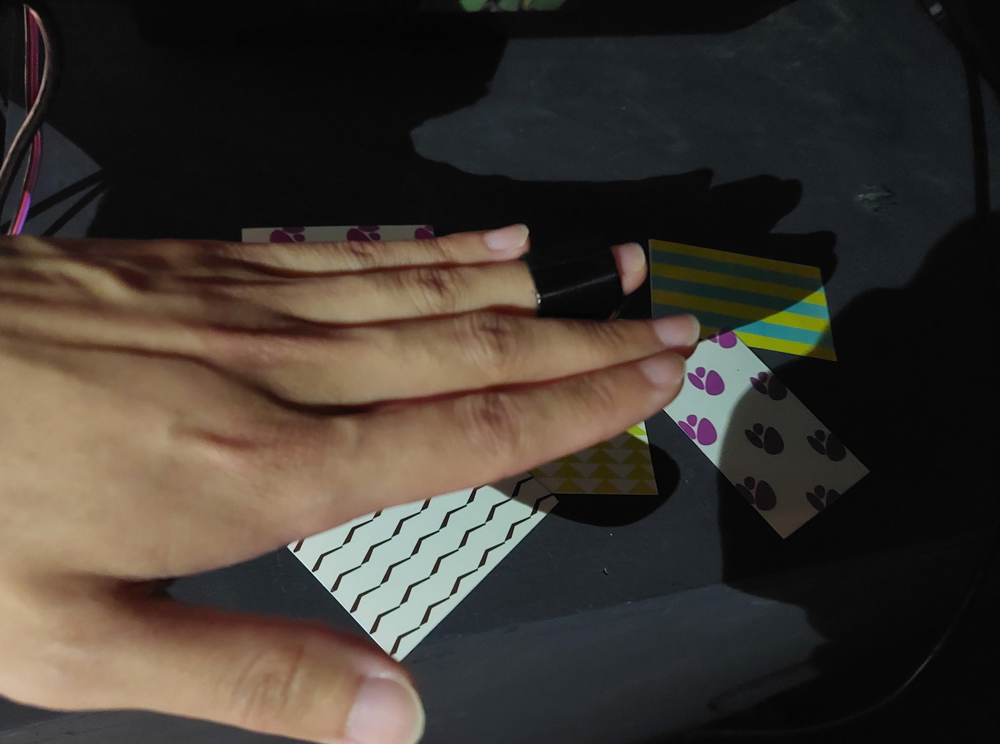
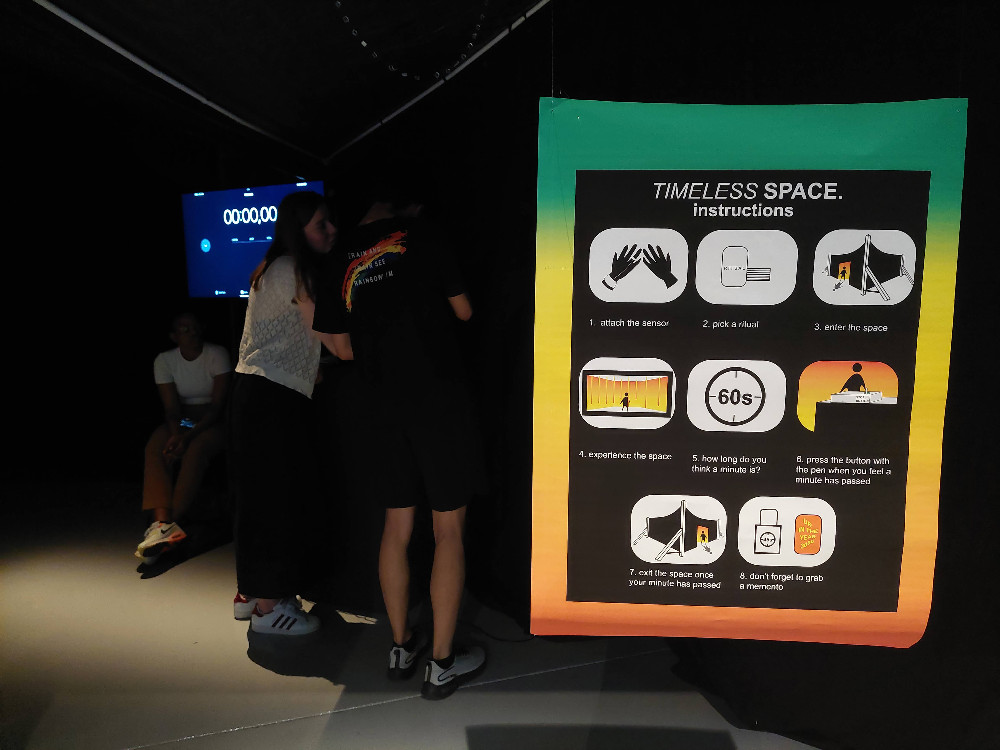
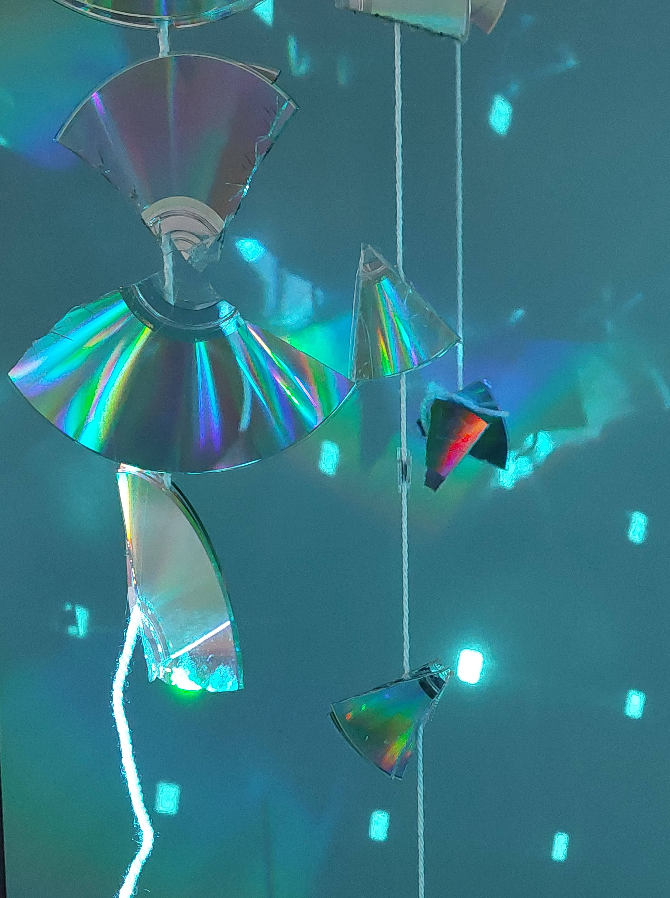
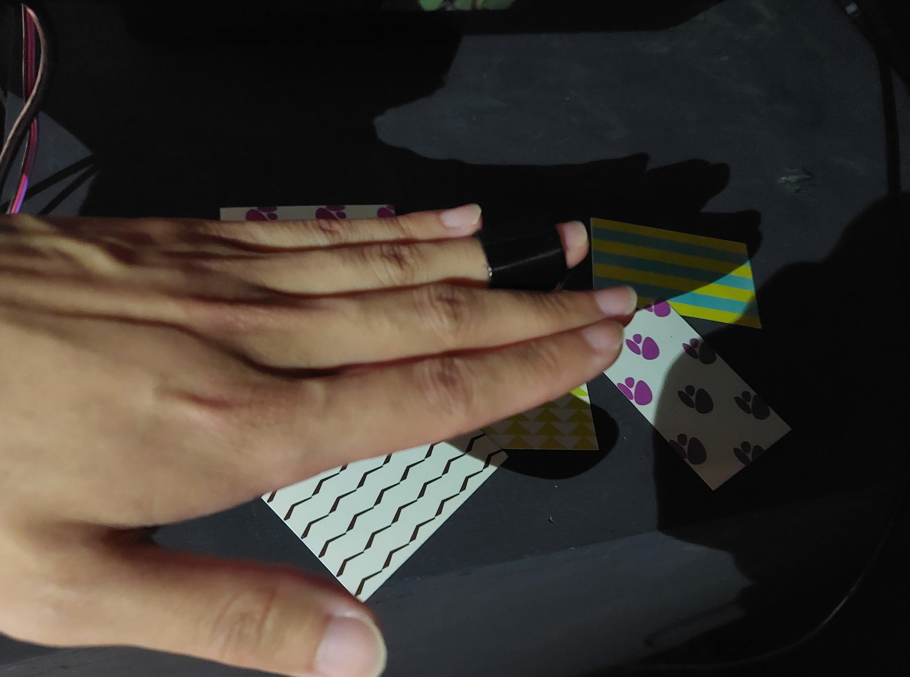

Anna Sivera van der Sluijs
Art
Enjoy some of my personal artworks!
Timeless Space
spatial design / exhibition Created together with Isa-Jane Ensing and Phila Hillie Inspired by culture, this experience makes participants aware of their personal and subjective experience of time by magnifying and reflecting their bodily (and thereby indirectly mental) experience of time through the measuring of their heartbeat. The heart can be seen as a personal and internal ticking clock. To visualise this bodily experience of time, we explored how time can be made tangible and czn be influenced. The final experience is an enclosed timeless space in which participants can experience their own unique sense of time.
 





Dreamreader
AI / image recognition Created together with Rick Heemskerk This intelligible AI creature is hooked up to a specialized computer that can accurately analyse the electric signals going through the creature. Optimized for this purpose, the computer can read and project the creature's thoughts, including a glimpse into its dreams when asleep. Interactions with the creature when awake will shape the creature's projected dreams, as well as your own.
Bat Experience
sensory modalities / wearable / arduino Created together with Yiming Tong and Xiaotian Ma With various Arduino sensors, this project evokes a new understanding of our physical space and consciousness by adapting the interesting sensory experience that bats have, to humans. Bats navigate their environment using echolocation, they listen to ultrasonic sound that echoes off objects in a space for three-dimensional localization. By using an ultrasonic distance sensor in combination with headphones, we made echolocation available to humans. By making the device wearable, humans can navigate through space as a bat. We used various other sensors and motors to make the bat experience complete.
Cat-Computer Interaction
prize winning / animal-computer interaction / empirical research Created together with Fatima Mashood, Isa-Jane Ensing and Roos Yunjie Smeets A really impressive project. The inventiveness shown here is really quite something, both in the formulation of your design principles and the prototype testing. Also worth highlighting is the attention to detail with which you conducted the experiment. Since domesticated animals such as cats are increasingly exposed to modern technologies, the field of cat-computer interaction (CCI) is explored in this research project. By extensively examining studies on CCI and investigating how technology can effectively cater to cats physical, cognitive, and emotional needs, we developed an overview of current findings as CCI principles. This includes five heuristics that cover the specific elements needed for successful cat-centered design and that can be applied when designing for CCI. As a first evaluation, the heuristic on cat vision was tested in an empirical experiment with three cats.

Defining and Measuring Gradations of Consciousness Inspired by Panpsychism
philosophy / academic writing
This is a really impressive piece of work, that was enjoyable to read and challenging in terms of the ideas it presents.
While the definition of consciousness remains under debate, many research projects are conducted to decide which creatures have consciousness, contributing to inconsistent evaluations of consciousness in research.
In the essay, I argue for a drastic change of the binary perspective on consciousness by considering a broader perspective regarding consciousness and entities that have a mind. A panpsychism-inspired theory on gradations of consciousness is proposed, including a way to measure consciousness in a holistic and non-anthropocentric way by using clustered indicators of consciousness, that could be achieved by any entity.
The perfect poet? How humans evaluate AI-generated poetry
AI / academic writing For this assigment, a specific research area with only 7 published papers was studied and summarised. In my case, how humans evaluate AI-generated poetry. Poetry is said to be a creative and emotional endavour that can not be accomplised by computers. Surprisingly, it appears that atrificial poets come close to the passionate works of art of us humans. Moreover, AI authors seem to surpass professional human poets according to human assessment.
Imperceivism
art / academic writing Imperceivism is a strategy of the arts involving interdisciplinary artworks that are not directly perceivable to our senses. It is possible for these artworks to contain perceivable elements, but only with the purpose to emphasize the immaterial aspect, which is the defining trait of the artwork.
Sushi! Sushi generator
evolutionair algorithm / processing / coding Sushi! is a creative tool especially tailored for renowned sushi chefs who are fearless in exploring the sushi cuisine. With the program’s aid, the creative sushi chefs can browse through possible new sushi hits. By clicking on a sushi they like, similar sushi will be shown. In this way the sushi is defined in more detail with each step. The chefs associate through variables like the shape and ingredients until they find the prefect new sushi. They can start with cooking right away.
Pen and ink
noise function / processing / creative coding This is a coding sketch inspired by drawing with pen and ink. The noise function is used to make random drawings.
Bunny game
game / processing / creative coding Try to eat as many carrots as you can as a bunny. This game makes use of a bunny and carrot object.
I Can Guess Your Age Based On How You Look At These Paintings
psychology / academic writing / playful research
Research of painting gaza behavior shows a significant difference in the natural gazing behaviour between adults and children. To investigate the premise of this correlation further, I decided to create an interactive BuzzFeed quiz as a playful way to express and further test the deduced correlation between the prominent attentional processing model and age.
Try the Buzzfeed quiz here: https://www.buzzfeed.com/annaatleiden/i-can-guess-your-age-based-on-how-you-look-at-thes-f18hfry31b
Allegory of the Housecats
epistemology / philosophy / visualisation A created mixed media miniature alternative version of Plato's Allegory of the Cave.
The Academic Life
academia / visualisation A visualised overview of the context of academia, based on the completed honours class The Academic Life.
Dancing Osciloscope
spacial design / music / puredata Created together with Artur Dobija Inspired by the oscilloscope, this instalation turns the room into a soundspace where you can dance (with a colorful hat on) to generate music. You can dance with multiple people or objects in the room, each compositon shape (capured via a camera above the space) wil generate unique sound patterns.
Harmonious singing
music / puredata This coding sketch listens to its environment and will harmonise with your singing based on the detected pitch. You can also clap your hands, then the application will clap in response.
Evaluating Art-Based Science Communication of Quantum Physics
thesis / quantum / science communication / art / academic writing This research proposes art-based science communication as an effective approach for the science communication of quantum physics. To study the effects, an art-based intervention representing the quantum phenomenon of wave-particle duality was created. The intervention was exhibited in a public library, and its effects on citizens were evaluated using the framework from research group IMPACTLAB. The findings suggest that art-based science communication can be engaging and thereby effective in the science communication of complex and abstract scientific concepts such as quantum physics.